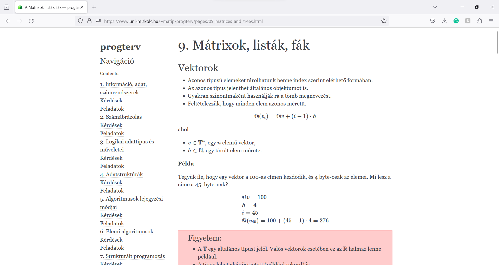

Programozási ismeretek
Tematika
- 1. hét
Információ, adat, Déscartes szorzat, elemi függvények és műveletek, számrendszerek, számrendszeri átváltás
- 2. hét
Számábrázolás: előjeles és előjel nélküli számok ábrázolása, lebegőpontos számábrázolás
- 3. hét
Logikai adattípus és műveletei, diszjunktív- és konjunktív normálforma, logikai
kapuáramkörök
- 4. hét
Adatstruktúrák: tömbök, vektorok, halmaz, karakter, sztring, dátum és idő ábrázolás
- 5. hét
Algoritmusok lejegyzési módjai, folyamatábra, pszeudó kód, UML szabvány ide
vonatkozó elemei
- 6. hét
Elemi algoritmusok, iteráció, rekurzió
- 7. hét
Strukturált programozás, Böhm-Jacopini tétel, ciklikus bonyolultság
- 8. hét
A számítógép elvi felépítése, fordítás és interpretálás, gépi kód, tárgykód
- 9. hét
Többdimenziós adatszerkezetek: mátrixok, listák, fák, fájlformátumok
- 10. hét
Procedurák, függvények, értékátadás, láthatóság, λ-kalkulus
- 11. hét
Típus konverziók: szám-szöveg, szöveg-szám, lebegőpontos számok, dátum és idő
konverziója
- 12. hét
Hibakezelés: hibák típusai, típusbiztonság, explicit- és implicit hibakezelés, tesztek, assertion-ök
- 13. hét
Forráskód szervezése, függőségek kezelése, rendszer integráció, verziókezelés, COCOMO modell
- 14. hét
Elvek, módszertanok (DRY, SOLID, SCRUM, KANBAN, TDD)